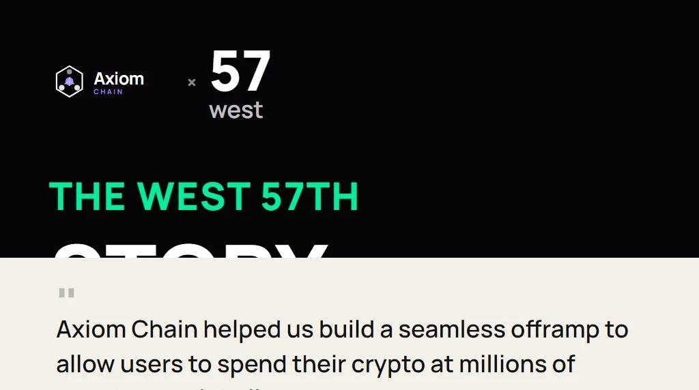

The West 57th story: Discover the process of developing a Web3 solution using blockchain technology with Axiom Chain, Australia's leading Web3 development agency.
Intro
Building in Web3 can sometimes be a daunting task for new founders, business owners and visionaries. This is why at Axiom Chain, we pride ourselves on our ability to intuitively comprehend your project's requirements and our capability to architect amazing blockchain based solutions. Our team is committed to building long lasting relationships with our valued clients, because the best results and applications come from such connections.
This is why we chose to sit down with one of our clients, West 57th, and dive into their evolutionary story. With their story we want to give you a glimpse into what it's like working with us at Axiom Chain.
Full transparency, good vibes, and an honest conversation about what it's really like building in Web3 has led us here. We hope you enjoy this case study.
West 57th
The Work
"Axiom Chain helped us build a seamless offramp to allow users to spend their crypto at millions of merchants globally," says Zollie. "Our overall mission, with every product we launch, is to help our users make the most of their digital assets."
This is the West 57th story.
What makes West 57th different and unique?
"Simplicity is key. We help you go from crypto-on-chain to product-in-hand in seconds.
We allow users to fund their transactions directly from their non-custodial wallet before spending those funds on our branded West 57th Mastercard via Apple or Google Pay, at a few million merchants in-store and online.
Additionally, we provide the platform so any Web3 project can issue their own co-branded card using their native SPL or ERC-20 token as the funding source. What differentiates us is that we can 'token-gate' each project's payment program if they want to mandate that users hold their NFT to gain access. This promotes an exclusive utility for their product.
As an example, Samoyedcoin, in partnership with West 57th has a Solana SPL-based payment card live in the market whereby their cardholders can spend $SAMO as they would cash.
Alongside Axiom Chain, we'll soon be releasing the ability to pay with more than $SOL and SPL tokens including some of the most popular coins for example BTC, ETH, AVAX, MATIC, etc."
Why Axiom Chain?
"Exceptional communication, reliability and attention to detail.
We had made a lot of connections in Web3, and we noticed a lot of people lean into anonymity. You don't always know who you're working with in Web3 – so it was important to us that we were able to meet the team at Axiom Chain face-to-face in a 3-4 hour workshop."
What surprised you the most about working with Axiom Chain?
"The Axiom Chain team brings a level of critical thinking and problem-solving to every piece of development no matter the size of scope. Even when we think we have a perfect solution in mind, they seem to somehow improve it and deliver an exceptional final product.
They really do care about the project and the tech we're building, evident by being involved in our community forums and the level of communication we have.
They also work within our budget to provide different options and solutions, to get to the intended result."
An overview of West 57th
Some of the achievements West 57th has accomplished so far include being prize winners in Solana's 2023 global Grizzlython hackathon, securing a Solana Foundation Grant to help onboard new users into the space and a co-branded card launch with $SAMO.
What's next?
We're working with West 57th in developing a solution to support the ability to pay with more than $SOL and Solana SPL tokens. This includes some of the most popular coins BTC, ETH, AVAX, MATIC, etc.
West57th's clear understanding of their product roadmap, ability to clearly prioritise features for development and then rolling these features out iteratively has led to a focussed, engaging and rewarding development experience. We're excited to continue this journey together and see big things ahead for West 57th and their passionate community.
Ready to work with Axiom Chain?
Based in Australia, we build all of our software in-house from our Brisbane office rather than outsourcing our work overseas. We collaborate with clients to strategise, conceptualise, design and build personalised blockchain technology and Web3 solutions. Axiom Chain advocates for a revamped internet, owned by its users.
Join forces with us, and let's collaborate to Shape the New World and bring your Web3 project or idea to life.